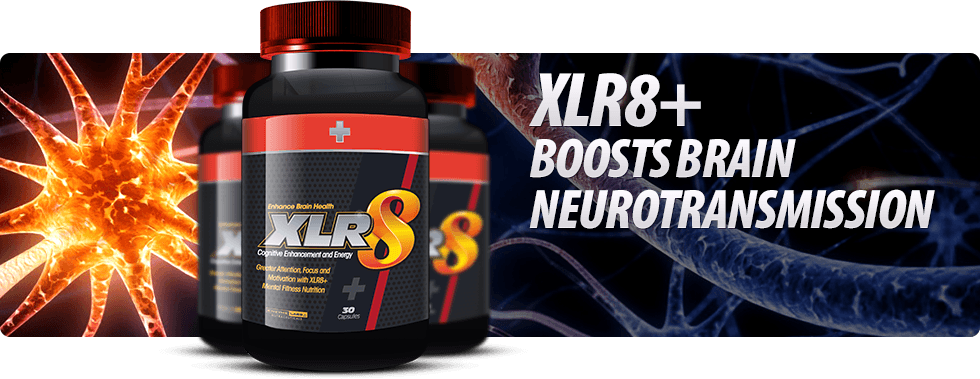
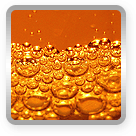
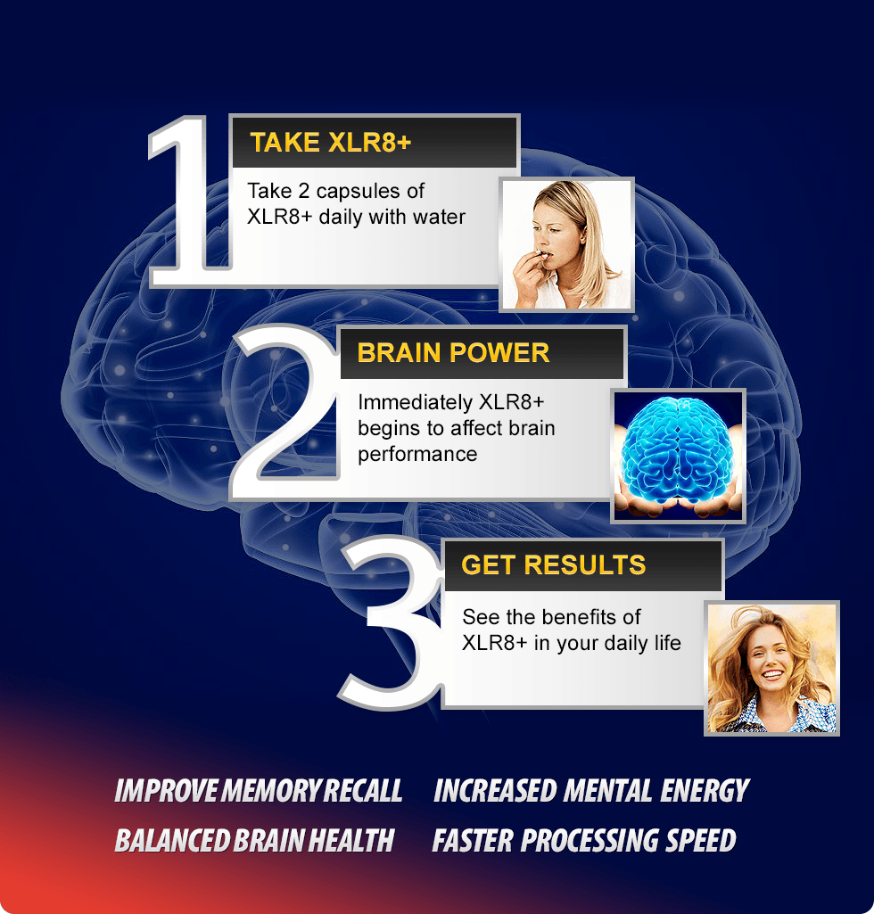

A phenylalanine-based productivity enhancer!!
XLR8+ XLR8 takes the prize because it will fill you with a desire to get the most out of whatever you're doing, whether work or pleasure. XLR8's phenylalanine formulation is a real cognitive detonator of nutrition that you can actually feel, unleashing creative power and energy whenever they are used.
Finally Vitality, Mental Fitness and Long Lasting Energy In A Convenient Capsule!
- Focus
- Memory
- Mental Energy
- Overall brain health
Cognitive Functions collectively associated with memory, reasoning and comprehensive skills all tend to decline as we age found one recent study from the "British Medical Journal".
XLR8+ aims to elevate the levels of neurotransmitters
by providing an abundance of biological neurotransmitter precursors.
Before XLR8+
Unhealthy neurotransmission brain activity
|
Attention or the ability to concentrate on one thing despite other things going on around you. Thus, as we get older we become more distractible. |
|
Working-memory or the ability to hold information for a brief time to perform a simple task. Thus, as we get older we're more easily confused. |
|
Long-term memory, especially for details such as names, locations, and who told us something. Thus, as we get older, we become more forgetful. |
|
Information-processing speed or how quickly we perceive, think, and act. Thus, as we get older our thoughts and actions get slower. |
After XLR8+
Healthy neurotransmission brain activity
|
Elevating levels of endogenous neurotransmitters for laser sharp focus. |
|
Providing anti-stress compounds for better sleep and concentration. |
|
Helping elevate mental clarity for brain improved thinking and awareness.. |
|
Enhancing blood flow to the brain for hepful long term neuro protection. |

XLR8+ BOOSTS BRAIN NEUROTRANSMISSION
BENEFITS OF XLR8+
-
55%
Increase in alpha wave magnitude as measured by an EEG device
-
26%
Improvement in processing speed as measured by a Stroop test
-
14%
Improvement in memory recall speed as scored by a MemTrax test
Smash Through Your Walls With Mental Fitness Nutrition
Phenylalanine
An essential amino acid. The human body cannot make it so it is essential to the diet. Phenylalanine that is ingested is largely transformed to form the amino acid tyrosine, which is used in protein synthesis. Too little phenylalanine curbs physical and intellectual growth. Phenylanine was first isolated in 1879.
*People who have the genetic disorder phenylketonuria (PKU) or certain other health conditions, phenylalanine can be a serious health concern. Consult your doctor before!

Taurine
Is an amino acid that supports neurological development and helps regulate the level of water and mineral salts in the blood. Taurine is also thought to have antioxidant properties. Studies suggest that taurine supplementation may improve athletic performance, and combined with caffeine is shown to improve mental performance.
*And in one study, people with congestive heart failure who took taurine supplements three times a day for two weeks showed improvement in their exercise capacity.

Glycine
The body uses glycine to make proteins. Glycine is also involved in the transmission of chemical signals in the brain, so there is interest in trying it for improving memory. It carries the chemical formula NH2CH2COOH, and is a really important part of many different functions in humans.
*Warning Clozapine (Clozaril) interacts with GLYCINE
Chromium Picolinate
Chromium is an essential trace mineral that is difficult to adbsorb. It has been shown that in the Picolinate form it is highly absorbed. Supplements that contain chromium picolinate may boost memory function in the elderly, says a new placebo-controlled, double-blind study. Published in the June 2010 Nutritional Nuroscience, scientists from University of Cincinatti College of Medicine, report that daily supplementation of Chromium Picolinate improved learning, recall and recognition memory tasks.
Vitamin A Vitamin B1 Vitamin B12 Vitamin B2 Vitamin B2 Vitamin B5 Vitamin B5 Vitamin E Zinc Caffeine
3 steps to smarter you

Take XLR8+
Take 2 capsules of XLR8+ daily with water
BRAIN POWER
Immediately XLR8+ begins to affect brain performance
GET RESULTS
See the benefits of XLR8+ in your daily life
XLR8+ BOOSTS BRAIN NEUROTRANSMISSION